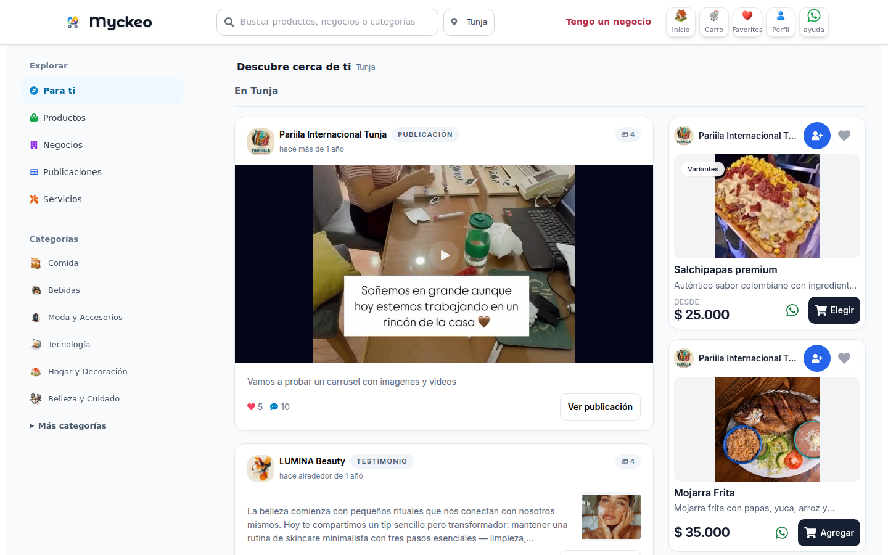
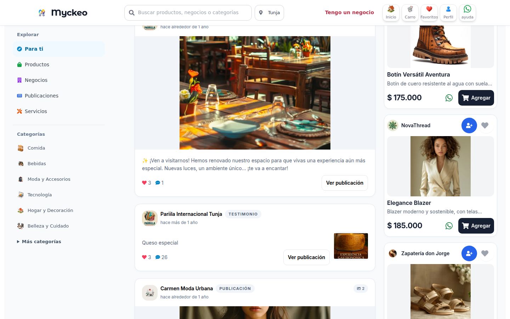
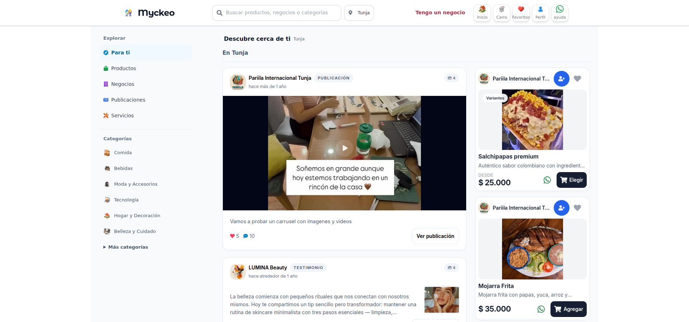
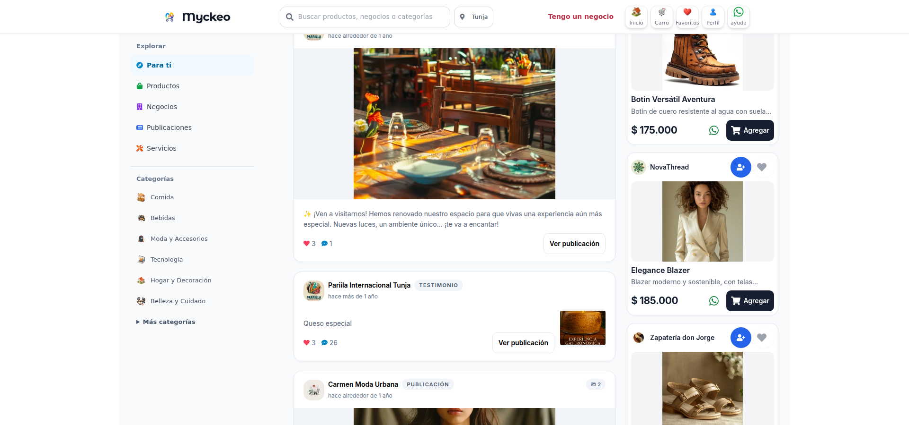
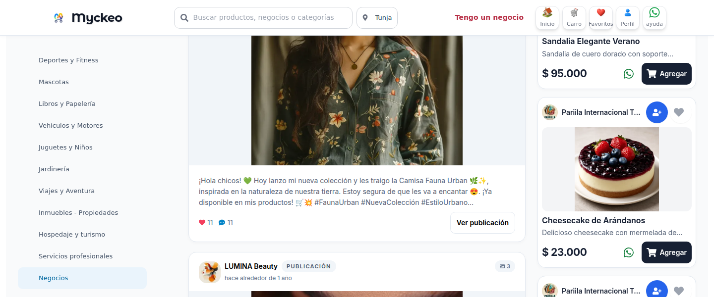
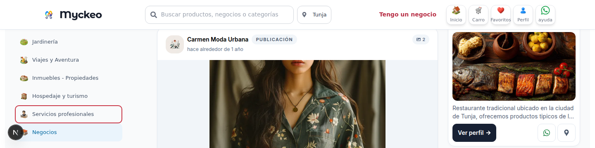
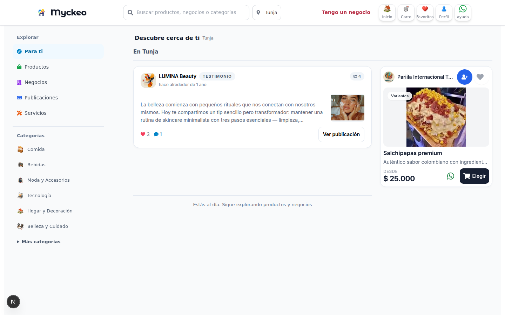
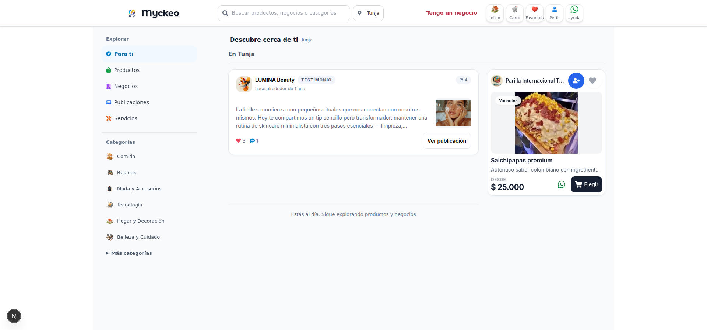
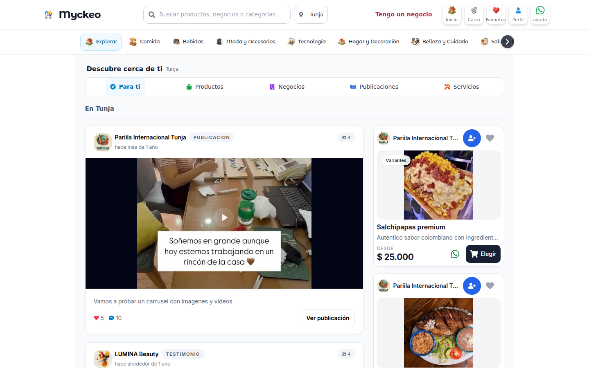
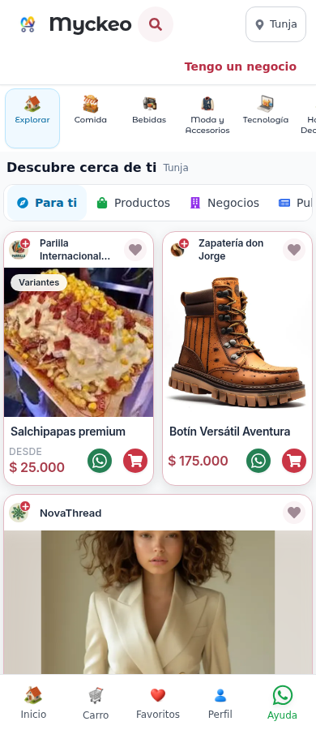
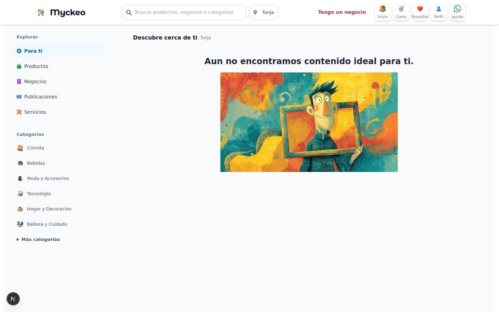
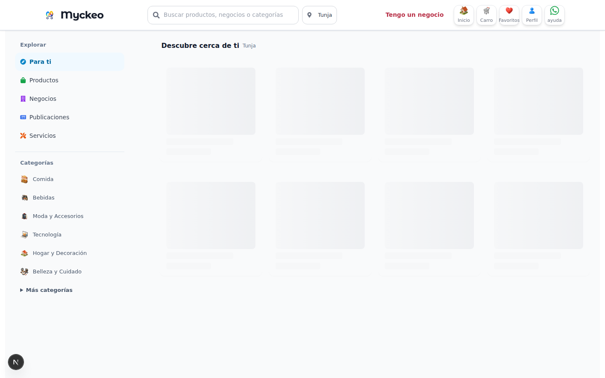
Principal estable de 680 px, oferta de 320 px y navegación sticky bajo la cabecera de 72 px. Estas capturas distinguen producción con contenido real de los estados controlados locales. Pulsa una imagen para abrirla al tamaño original.
Commit funcional: 0f9d5df1682c123217ab4c8b696b1d34d45b28e6. Deployment funcional: dpl_25uB96GqEAddmayEeDszLoKVTk7q, READY, red-social, Git/main. El cierre documental conserva el mismo código de aplicación.
Informe completo · Comprobación pública · Estados de finalización · Pendiente histórico de Public smoke












Los enlaces y las imágenes son relativos. No hacen falta servidor ni recursos externos para abrir esta galería. La prueba escasa no afirma agotamiento del catálogo público. No se ejecutaron compras, mensajes, cuentas ni seguimiento autenticado.